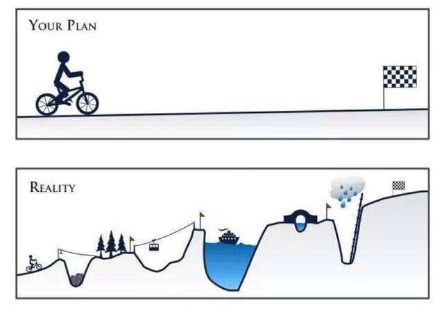

Sistemas Distribuídos
Bem vindos ao curso de Sistemas Distribuídos, GBC 074 (BCC). Esta página é o ponto de partida para acesso a todo o material que estudaremos.
A seguir, veja o plano de como nossa interação acontecerá. Para deixar bem claro, isto é um plano, e planos podem ser serão alterados:

Para comunicação, usaremos o MS-Teams. Para entrar no time do curso, logue-se com seu email institucional usando este e use o código enviado para o seu email para se registrar.
As atividades da semana serão postadas abaixo, semana a semana. Na descrição das atividades,
- NA quer dizer Notas de Aula, acessíveis em https://lasarojc.github.io/ds_notes/,
- S quer dizer atividade síncrona na data em postada, feita em uma reunião no MS-Teams, gravada e disponibilizada para revisão posterior e como atividade assíncrona pela outra turma, e
- A quer dizer atividade assíncrono, a ser realizado pelo discente antes da próxima atividade.
Semana 1
-
S - 29/11/2021: 8:50 e 20:50
-
Apresentação
- (NA) Prefácio
-
Plano do curso: ver aba arquivos no MS Teams
-
Seminários
- O objetivo dos seminários é apresentar tópicos modernos relacionados à computação distribuída.
- Os alunos deverão gravar seminários, em grupos de 2 alunos, para seus colegas.
- Cada seminário terá duração de 40 minutos.
- Cada seminário será acompanhado por um questionário desenvolvido pelos apresentadores a ser respondido offline.
- Sua apresentação será avaliada nos seguintes pontos:
- Duração
- Conteúdo:
- Contextualização
- Importância para o profissional da área
- Referencial teórico
- Algo mais: discussão, vídeo, lab
- Qualidade dos slides
- Qualidade do questionário
- Não faça questões triviais.
- Coloque 5 alternativas que façam sentido, mas só uma correta.
- Não use "todas as alternativas" ou "nenhuma das alternativa" ou coisas do gênero.
- Proposta de temas
- Arquiteturas distribuídas reativas usando Kafka
- Pravega.io
- Event Sourcing
- O protocolo PBFT
- Algorand
- Dapr
- Kubernetes
- Cache distribuído Redis
- New Directions in Cloud Programming
- O protocolo Hermes
- Se precisar de um tema, entre em contato.
-
Projeto
- Os alunos desenvolverão um projeto seguindo uma especificação intencionalmente vaga para exercitar sua capacidade de resolução de problemas usando os conceitos apresentados na disciplina.
-
Questionamentos podem e devem ser feitos para refinar a especificação.
-
A especificação será disponibilizada aqui
- Grupos dos trabalhos serão compostos por no mínimo 4 e no máximo 6 alunos.
- Não, não pode ter menos de 4 ou mais de 6.
- Grupos podem ter membros das duas turmas.
-
-
Introdução
-
S: 14/07/2021: 10:40
-
Introdução
-
A
- (LT) Sistemas Distribuídos: Princípios e Paradigmas. Capitulo 1.
- Difference Between Centralized, Decentralized & Distributed Systems Oversimplified
- Transparência - Parte 1
- Transparência - Parte 2